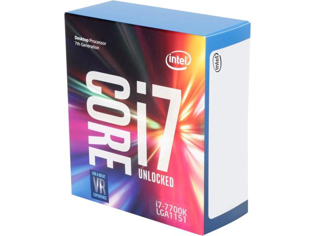
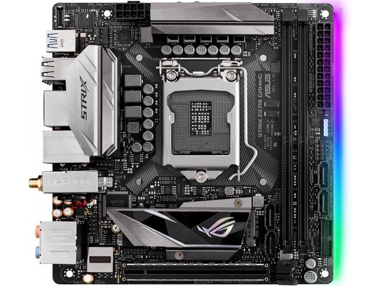
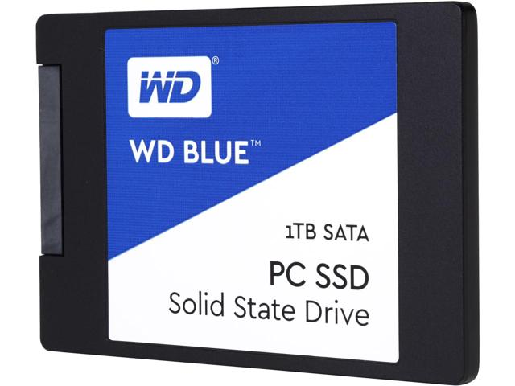
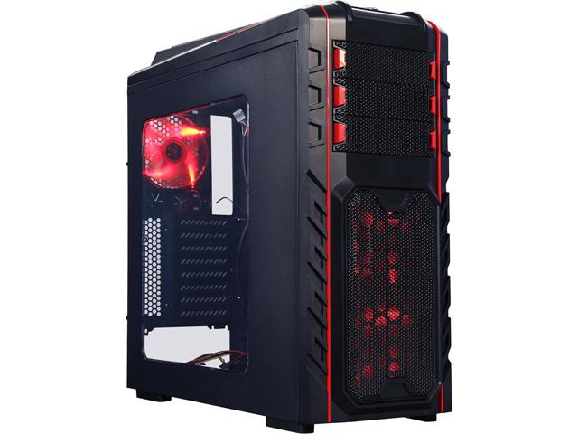
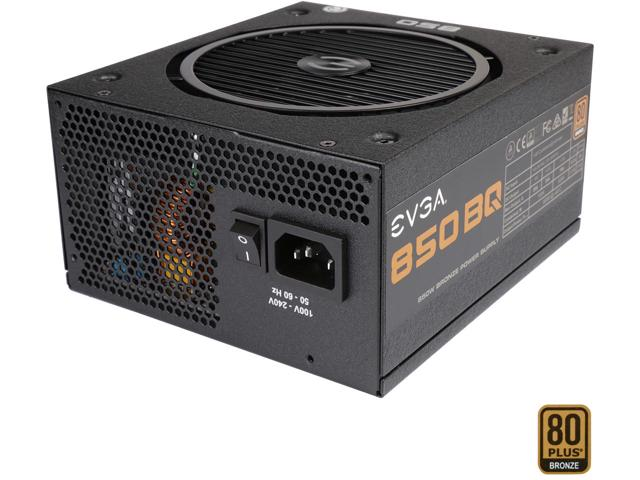
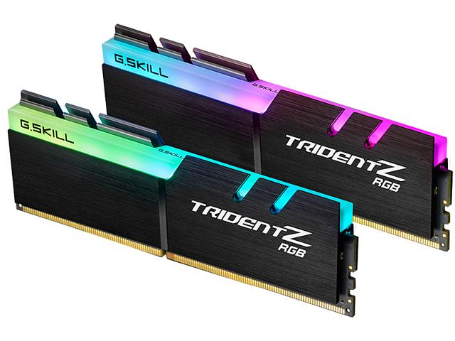

This is the 1080. One of the best graphics cards on nvidias line. with 2560 cores onboard, you will be able to run most games full setting 1080p with more than 60 frames per second. although not quite as good as the 1080ti, it will still pack quite a punch. (cards for a similair price and links: EVGA 1080 hybrid (800.00$), EVGA 1080ti founder's edition (1067.00$))
The i7 7700k is one of the best i7s out there. with 4 hyper-threaded cores, you can play for hours, this cpu will not be outdated soon, considering it just came out. ( processors for a similair price and links: i7 7700k (530.00$), i7 7700 (480.00$), )
The new architecture from intel (kaby lake) brough upon not only a new set of processors, it brought upon the age of the new intel 200 series chipset. The new z270, this one made by asus, is meant for a powerfull k series kaby lake processor, such as the 7700k. (link: ASUS Z270 gaming motheboard(238.00$))
An ssd is the ultimate storage device these days. although it gets slower the more data you have on it, it is still you best option for security and for speed. (Link: 1TB WD ssd (450.00))
The beast that is a full atx case is the best option for having multiple graphics cards, more fans, and overall street cred, and the DIYPC Skyline-06 is no slack in that department. with three 5.25" device trays, you can put a floppy disk drive, a cd drive, and a blu ray drive. (Link: DIYPC Skyline-06 (150.00))
(link: EVGA 850w (160.00$))
The g.skill tridentz ddr4 ram, at a speed 3200 is very good for loading games and maps at some of the fastest speeds, and with 16gb, you can run multiple programs at once without worring weither you will run out of memory. (Link: G.Skill ddr4 16gb ram (210.00))